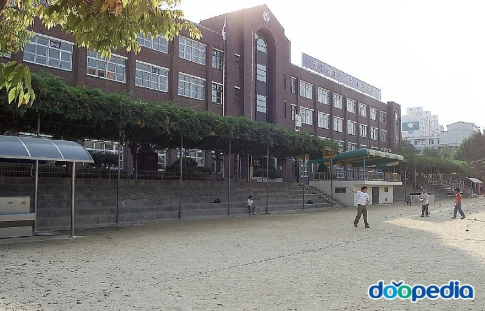

역사가 오래된 학교인지라 아직도 나무로 되어 있는 교실이 많다. 특히 뒷 건물로 가면 더욱 심하다. 심지어 외벽이 벽돌로 되어 있다. 학교 전체가 2개의 건물로 나뉘어 있으며, 중간에 연결하는 복도가 있어 위에서 내려다 보면 H형이다. 체육관이 따로 있으며, 천장이 상당히 높고 공간이 넓어 대강당으로도 사용한다. 무더운 여름철 야외에서 체육을 하면 더위를 먹는 등 초등학생들에겐 어느정도 부담이 있을 수 있지만 체육관은 천장도 있고 에어컨도 틀어 두어 상당히 시원하다. 음악실에는 드럼, 피아노, 국악부 악기 등 꽤 많은 악기들이 있으며 1, 2학년들이 실습을 하는 장소이다. 칠판의 상태가 안 좋아 잘 써지지 않는다. 3학년은 음악, 미술 과목을 배우지 않는다. 도서관은 일반 교실 3개 정도 크기로 굉장히 크며, 도서관 뒤편에 평소엔 닫혀 있는 열람실이 있다. 이 열람실에는 초등학생들의 일반적인 수준보단 높은 수준의 책(이기적 유전자, 코스모스, 베르나르 베르베르 소설 등)이 놓여져 있어서 거의 아무도 사용하지 않는 듯하다. 도서관을 이용하기 위해서 카드를 만들어야 하며, 이는 학기 초에 나눠준다. 이 카드를 가져가지 않으면 대출이 불가능하다. 앞동과 뒷동 사이에 작은 텃밭이 있으며, 가끔씩 식물의 성장을 관찰한다고 키우기 쉬운 식물을 잔뜩 심었었다. 현재는 거의 하지 않는 듯하며, 관리인이 주변의 텃밭이나 소나무들을 가끔씩 관리하고 있다. 급식실은 신식 건물인 체육관 건물에 있어 훨씬 깨끗하며, 의자가 테이블에 고정되어 있어 어질러지지 않는다. 배식은 학생들을 양 벽으로 세우고 끝 중앙에서 배식을 받아간다. 급식실 정 중앙에 남은 반찬들을 마음껏 가져갈 수 있는 공간이 있다.